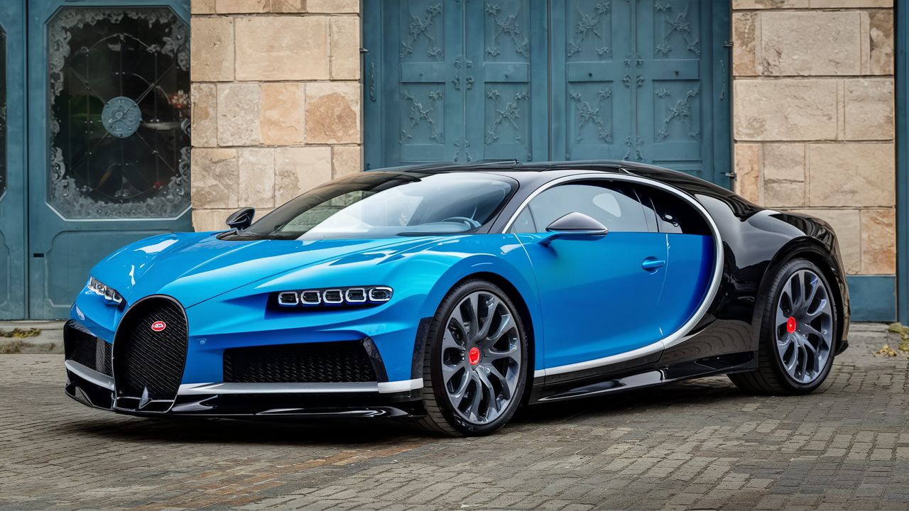
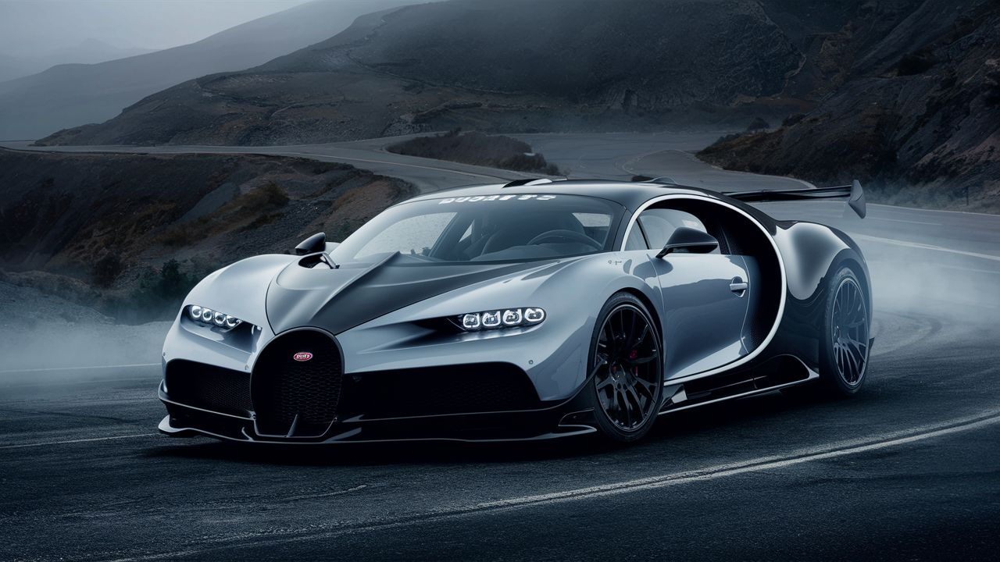
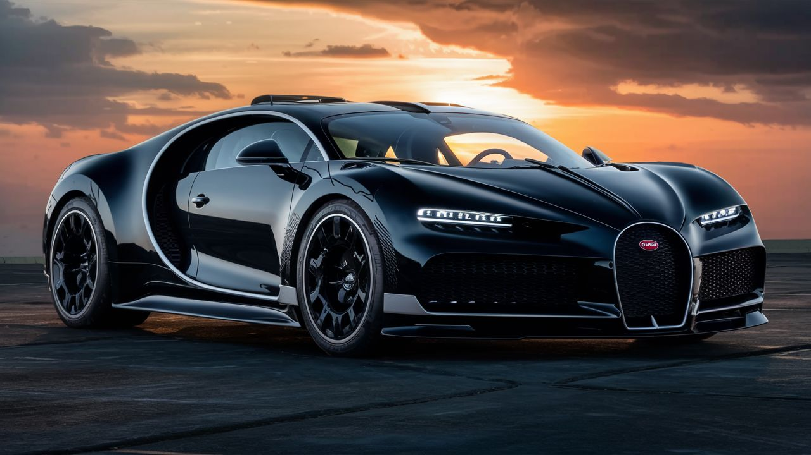

Bugatti
Bugatti es un fabricante francés de automóviles superdeportivos de gran lujo y competición, con una historia rica en innovación y prestigio. Fundada en 1909 por Ettore Bugatti en Molsheim, Alsacia, la marca ha sido reconocida por la creación de vehículos emblemáticos como el Type 53, Type 55 y Type 57. Tras un período de altibajos, la marca resurgió en 1987 con el Bugatti EB110, marcando el inicio de una nueva era para la compañía2 . En la actualidad, Bugatti es conocida por sus modelos exclusivos y de alto rendimiento, como el Bugatti Chiron. Este hiperdeportivo revolucionario se caracteriza por su motor W16 de 8 litros con 1500 CV, capaz de alcanzar velocidades superiores a los 490 km/h. El Chiron ha establecido nuevos estándares en cuanto a velocidad y diseño, manteniendo la artesanía y exclusividad que caracterizan a la marca5 . Bajo la dirección de Stephan Winkelmann desde 2017, Bugatti ha explorado nuevas formas de ofrecer vehículos exclusivos y únicos, alejándose de las cifras absolutas de potencia para centrarse en la creación de coches verdaderamente singulares. Proyectos como el Bugatti Divo y La Voiture Noire han demostrado la capacidad de la marca para innovar y mantenerse en la cima del mercado automotriz de lujo
Modelos destacados
Bugatti Chiron

Motor: W16 de 8.0 litros Quad-Turbo Potencia: 1479 caballos de fuerza Aceleración (0-100 km/h): Menos de 2.5 segundos Características: Supercar de altas prestaciones, diseño aerodinámico, lujo extremo. Precio: Desde aproximadamente $3.0 millones USD..
Bugatti Divo
: Motor: W16 de 8.0 litros Quad-Turbo Potencia: 1479 caballos de fuerza Aceleración (0-100 km/h): Menos de 2.5 segundos Características: Supercar de altas prestaciones, enfocado en la agilidad y el manejo. Precio: Desde aproximadamente $5.8 millones USD.
Bugatti La Voiture Noire
Motor: W16 de 8.0 litros Quad-Turbo Potencia: 1479 caballos de fuerza Aceleración (0-100 km/h): Menos de 2.5 segundos Características: Hypercar exclusivo, diseño único, lujo y exclusividad incomparables. Precio: Aproximadamente $18.68 millones USD..